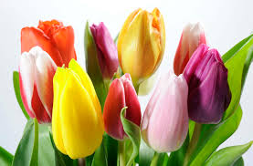
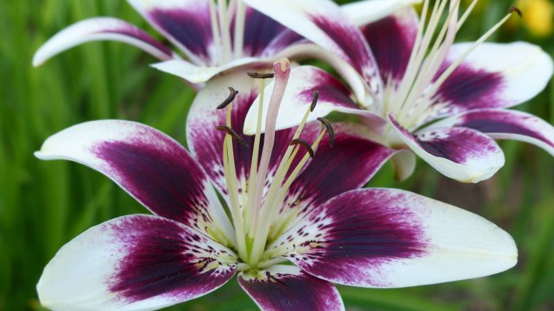
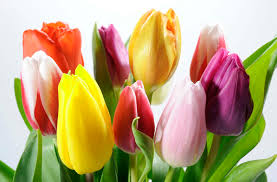
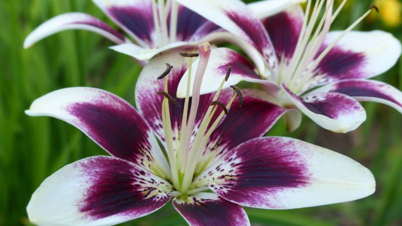

Rosas
La rosa es quizás una de las flores más reconocidas y populares en todo el mundo. Con sus pétalos suaves y delicados,
la rosa viene en una amplia gama de colores, desde el clásico rojo pasión hasta el delicado rosa, el vibrante amarillo
y el puro blanco.
Además de su belleza visual, la rosa también es apreciada por su aroma dulce y distintivo. Se ha asociado
durante mucho tiempo con el amor, la pasión y el romance, lo que la convierte en una opción popular para regalos románticos
y ocasiones especiales como bodas y aniversarios.
Lirio
El lirio es una flor elegante y majestuosa que se destaca por sus tallos altos y sus flores grandes y llamativas.
Con sus pétalos acampañados y sus colores vibrantes, como el blanco puro, el rosa suave y el amarillo brillante,
el lirio agrega un toque de gracia y sofisticación a cualquier arreglo floral.
Además de su belleza estética, el
lirio también tiene un aroma distintivo y encantador. Se asocia comúnmente con la pureza, la inocencia y la renovación ,
lo que lo convierte en una opción popular para celebrar ocasiones como nacimientos, bautizos y bodas.
Tulipán
El tulipán es una flor primaveral encantadora conocida por su forma única y sus brillantes colores. Con sus tallos delgados
y sus pétalos en forma de copa, el tulipán viene en una amplia variedad de tonos, desde el rojo intenso y el amarillo
brillante hasta el morado profundo y el blanco puro.
Esta diversidad de colores y formas hace que los tulipanes sean
una opción versátil para arreglos florales y decoraciones. Además de su belleza visual, el tulipán también es apreciado por
su elegancia simple y su simbolismo de amor y felicidad, lo que lo convierte en una opción popular para una amplia gama de ocasiones,
desde cumpleaños y aniversarios hasta eventos formales y celebraciones de primavera.
| Productos | Contact | Country |
|---|---|---|
| Rosas | Tulipanes | Lirios |